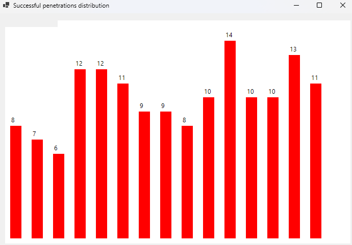
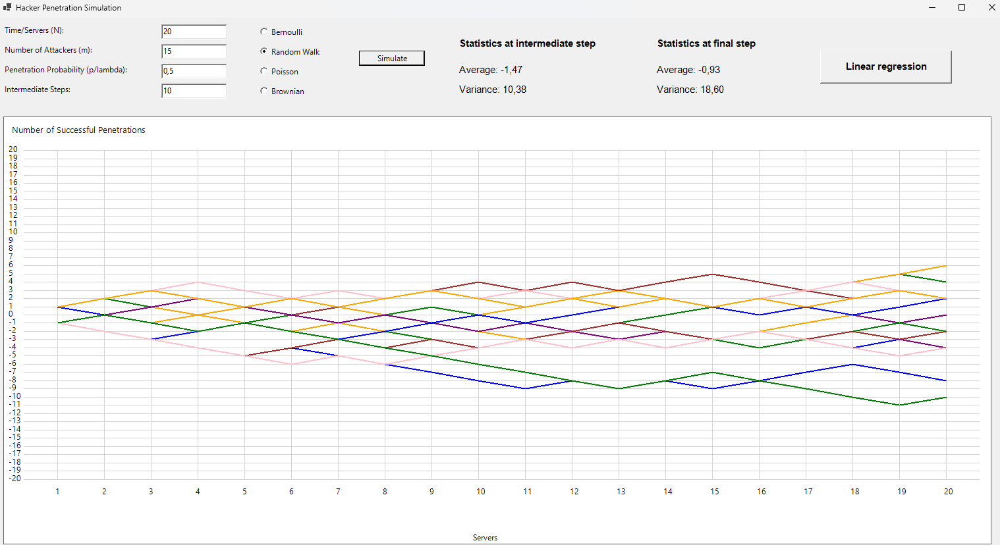
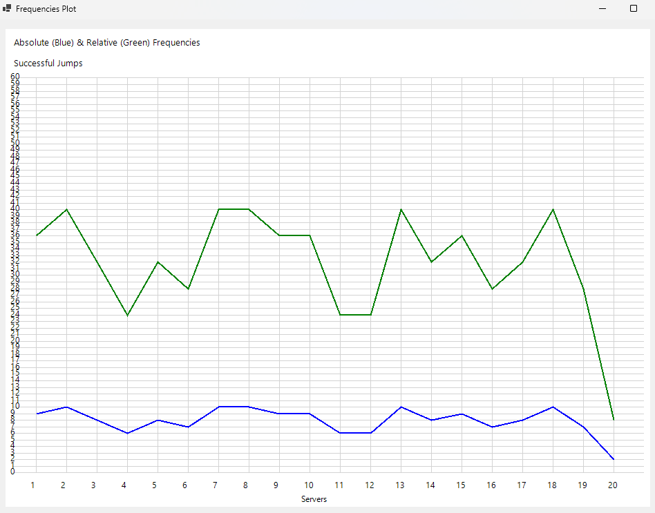
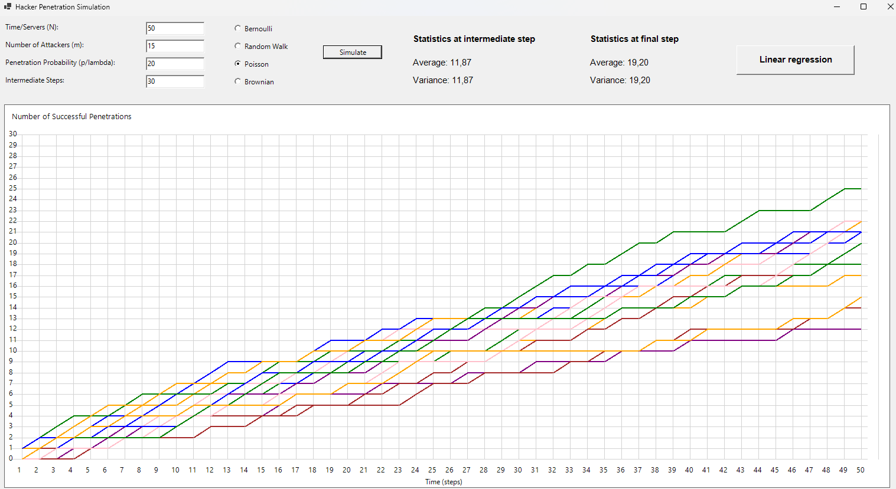
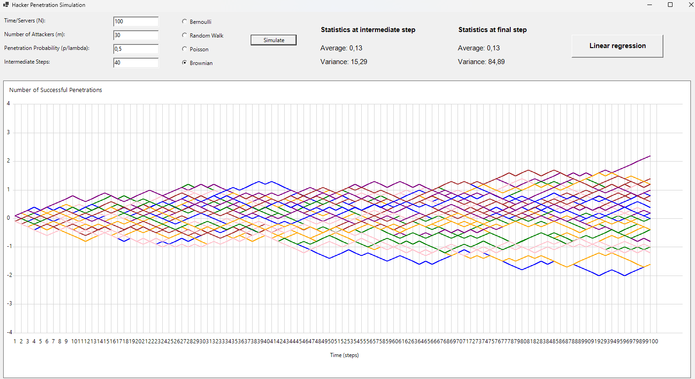

Attack Simulation Exercise
This program consolidates the previous four distinct simulators into a single application, allowing users to select one of the four simulation functions: Bernoulli, Random Walk, Poisson, or Brownian Motion. Each simulation option can be chosen via a radio button, making it easy to switch between functions as desired. When a particular simulation type is selected, the program automatically sets initial parameters to default values that are appropriate for that specific simulation.
After selecting the desired simulation function, users can press the "Simulate" button to generate the output. The simulation produces graph, histograms, statistics and frequency plot, just as in previous homeworks.
Bernoulli


Random Walk


Poisson
Brownian
Linear Regression
Clicking the "Linear Regression" button starts a simulated linear regression on two random sets of data, each with 100 points. The program calculates the line that best fits each dataset, finding the 2 fundamental linear regression coefficients a and b, which represent the slope (how steep the line is) and the intercept (where the line crosses the y-axis). It also calculates the R2 (R-squared) value (0 to 1), which tells us how well the line matches the data. The grater it is, the more they match.
Indeed, the linear regression is a way to find a straight line that best represents the relationship between two variables, giving an explanation of how one variable changes predictably with the other one: the slope shows how much the Y variable increases or decreases on average wrt a variation of the X variable.
The R2 value (from 0 to 1) shows how close the points are to this line. If R2 is close to 1, the line matches the data well; if it's closer to 0, the line doesn’t fit the data as well.